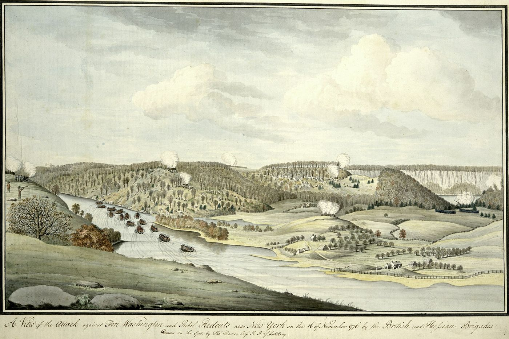
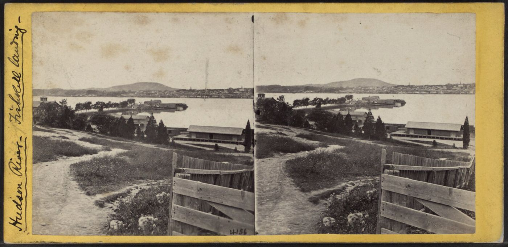
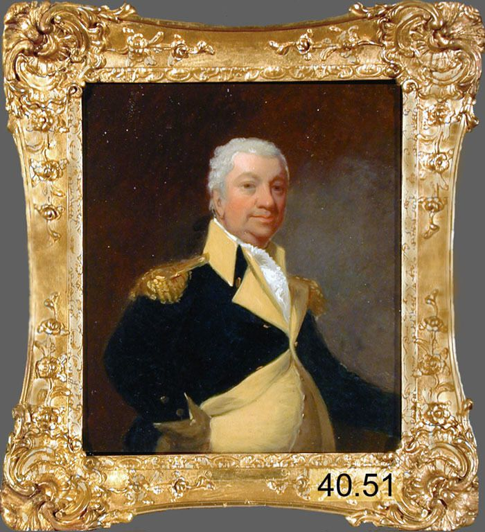

Biography
Nathan Tuffs fought from Lexington to Yorktown. He was an artilleryman in Knox’s regiment, a prisoner after Fort Washington, and a three-year man in the 13th Massachusetts.
Service Record
Town: Portsmouth, N.H.; Bethel, Vt. · Dates: 1752 – 1827
Born 16 Dec. 1752 in Portsmouth, N.H.; died 5 Aug. 1827 at Bethel, Vt., unmarried; moved to Bethel 1820. (Tufts Kinsmen, Vol. I, p. 150, family no. 35-9)
Volunteer at Lexington, probably on the retreat of the King’s troops from Concord; May 1775 enlisted at Cambridge as a private for eight months in Capt. Thomas Wait Foster’s Co., Col. Gridley’s [extract: “Guidley’s”] Regt. of Artillery; in Dec. 1775 re-enlisted for a year in the same regiment, commanded in 1776 by Col. Knox. (Tufts Kinsmen, Vol. I, p. 150, family no. 35-9)
Credited with Bunker Hill, Bemis Heights, the capture of Burgoyne, and the surrender of Cornwallis; taken prisoner at Fort Washington in 1776 and held two months before parole. (Tufts Kinsmen, Vol. I, p. 150, family no. 35-9)
Enlisted again 20 Feb. 1777 for three years in Capt. Aaron Haines’s Co., Col. Wigglesworth’s 13th Regt.; honorably discharged at Snake Hill near Newburgh, N.Y.; on the pension roll 5 Mar. 1819 at $96.99 a year, receiving $885.33 in all. (Tufts Kinsmen, Vol. I, p. 150, family no. 35-9)
Family Connection
Family number 35-9 in Tufts Kinsmen, Vol. I. Parents are not named in the extract seen.
Spouse(s)
Unmarried (Tufts Kinsmen, Vol. I, p. 150).
Authoritative IDs / Index Numbers
| Source | ID / status |
|---|---|
| Perseus person index (auth=) | auth=tufts,nathan. This is a name-level key shared by every Nathan Tufts in Perseus, not a personal ID. Use it with the passages cited on this page. |
| Find a Grave memorial | Checked, not found |
| Brooks, History of Medford (1855) register no. | Checked, no entry confidently matched |
| Tufts Kinsmen, Vol. I family no. | 35-9 |
| Mass. Soldiers and Sailors | Not yet checked for this page |
| DAR ancestor no. | Note: Pending further work. |
| FamilySearch ID | Note: Pending further work. |
| Geni profile | Note: Pending further work. |
| WikiTree ID | Note: Pending further work. |
| Town / vital records | Medford VRs not yet checked by volume and page |
Only IDs confirmed against dates and family are given as matches. “Not yet checked” means the source has not been searched; “Checked, not found” means it was searched without a match.
⚑ Unverified
The extract spells the artillery colonel “Guidley”; Gridley is the likely reading but is not confirmed. No other source on this site has yet been checked for this man.
Pictures






.jpg){kind=link}



Links and Resources
Every source, record, map, survey, marker and artifact tied to this person, gathered in one place. Page numbers are given where a book is cited.
Maps, Surveys and Artifacts
- — The Battle of Bunker’s Hill, June 17, 1775 (Trumbull). A period illustration: John Trumbull’s painting of the battle, 1786. Image: John Trumbull. Public domain. Source: Wikimedia Commons Surrender of
- Source: Wikimedia Commons — The Battle of Bunker’s Hill, June 17, 1775 (Trumbull). A period illustration: John Trumbull’s painting of the battle, 1786.Image: John Trumbull. Public domain.
- — The Battle of Bunker’s Hill, June 17, 1775 (Trumbull). A period illustration: John Trumbull’s painting of the battle, 1786.Image: John Trumbull. Public domain. Source: Wikimedia Commons
- Source: Wikimedia Commons — Surrender of General Burgoyne at Saratoga, October 17, 1777 (Trumbull). A period illustration: John Trumbull’s painting in the U.S. Capitol Rotunda, commissioned 1817 and completed 1821.Image: John Trumbull. Public domain.
- — …Burgoyne at Saratoga, October 17, 1777 (Trumbull). A period illustration: John Trumbull’s painting in the U.S. Capitol Rotunda, commissioned 1817 and completed 1821.Image: John Trumbull. Public domain. Source: Wikimedia Commons
- Source: Wikimedia Commons — The Attack against Fort Washington, November 16, 1776. A contemporary view drawn by British officer Thomas Davies of the attack on Fort Washington, Manhattan.Image: Thomas Davies. Public domain.
- — …CommonsThe Attack against Fort Washington, November 16, 1776. A contemporary view drawn by British officer Thomas Davies of the attack on Fort Washington, Manhattan.Image: Thomas Davies. Public domain. Source: Wikimedia Commons
- Source: Wikimedia Commons — Newburgh and Snake Hill from Fishkill Landing, about 1860–1870. A stereoscopic view across the Hudson toward Newburgh with Snake Hill in the distance.Image: E. & H. T. Anthony (NYPL). Public domain.
- — …and Snake Hill from Fishkill Landing, about 1860–1870. A stereoscopic view across the Hudson toward Newburgh with Snake Hill in the distance.Image: E. & H. T. Anthony (NYPL). Public domain. Source: Wikimedia Commons
- Source: Wikimedia Commons — Gen. Henry Knox (after Gilbert Stuart). Portrait of Henry Knox after Gilbert Stuart, about 1805, Detroit Institute of Arts.Image: After Gilbert Stuart (Detroit Institute of Arts). Public domain.